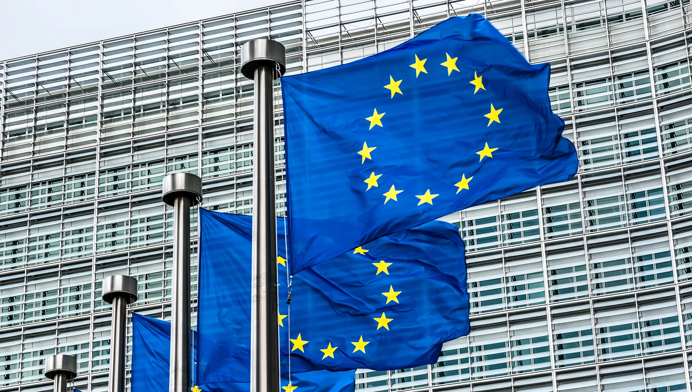
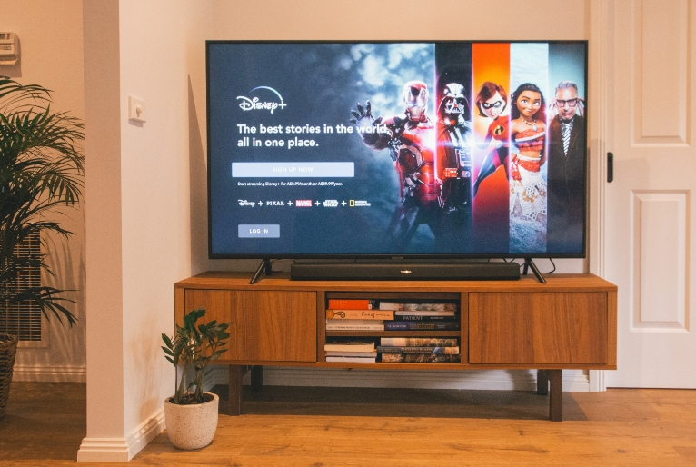
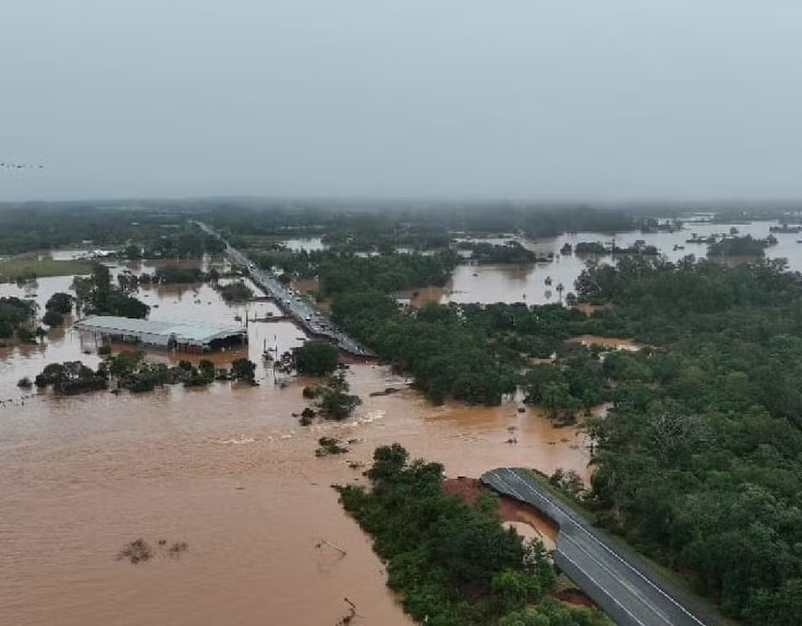

Dólar oscila, com alta nas projeções para inflação e PIB

O dólar opera com volatilidade nesta segunda-feira (2), primeiro pregão de setembro, oscilando entre altas e baixas, em dia de feriado nos Estados Unidos, o que reduz os níveis de negociação nos mercados financeiros de todo o mundo.
No Brasil, o mercado acompanha a divulgação de mais uma edição do Boletim Focus -- relatório do Banco Central (BC) que reúne as projeções de economistas do mercado para os principais indicadores financeiros do país.
Nesta edição, o Focus mostrou, pela sétima semana consecutiva, o aumento das expectativas para a inflação brasileira em 2024. As estimativas para o Produto Interno Bruto (PIB) do país, porém, também cresceram nesta semana.
Investidores também monitoram novos dados vindos da China, que mostram uma desaceleração das exportações na segunda maior economia do mundo. Ainda, repercute uma notícia de que as autoridades chinesas estão estudando um refinanciamento de até US$ 5,4 bilhões das hipotecas do país.
-- Informações de 02/09/2024 --
China quer negociar retomada de acordo comercial de 2020 com Trump
O governo da China está preparando uma proposta inicial para tentar impedir que o presidente dos Estados Unidos, Donald Trump aplique tarifas ainda maiores contra os produtos do país e imponha mais restrições de acesso à tecnologia. De acordo com pessoas familiarizadas com o assunto, a aposta chinesa tem como foco a retomada do acordo comercial assinado pelos dois países em 2020, no primeiro governo de Trump. À época, o pacto fracassou.
Segundo tais fontes, Pequim considerou que a tarifa de 10% anunciada por Trump no sábado, 1º, sobre as importações da China foi uma forma de pressão, mas longe do nível máximo, que seria considerado intolerável pelos chineses. Em uma resposta inicial tímida, o Ministério do Comércio da China informou que acionaria a Organização Mundial do Comércio (OMC) contra os Estados Unidos e pediu um “diálogo franco” entre os dois países.
O chamado Acordo de Fase Um, assinado em 2020, exigia que a China aumentasse as compras de bens e serviços americanos em U$ 200 bilhões durante dois anos. Após o fracasso da iniciativa, Pequim agora se prepara para indicar aos EUA em quais áreas poderia ampliar as aquisições de produtos americanos.
-- Informações de 03/02/2025 --
União Europeia avisa: se Trump impuser tarifas, haverá retaliação
Um dia após o presidente americano Donald Trump assinar ordens para tarifar Canadá e México em 25%, e China em 10% além das tarifas já praticadas, a União Europeia afirmou neste domingo (2) que responderá de forma firme se os EUA fizerem o mesmo com o bloco, em um sinal recente de descontentamento com as táticas comerciais de Trump que estão repercutindo globalmente.
Na sexta-feira (31/01), Trump disse que “absolutamente” imporá tarifas à União Europeia. A Comissão Europeia e os estados-membros discutirão essa possibilidade durante uma reunião ministerial sobre comércio em Varsóvia na terça-feira (04/02).
Um porta-voz da comissão afirmou que, até o momento, o bloco de 27 membros não foi informado sobre a imposição de tarifas adicionais sobre produtos da UE, destacando que a relação comercial e de investimento com os EUA é a maior do mundo. O uso de tarifas é “doloroso para todos os lados”, disse o porta-voz, e a UE lamentou a decisão de Trump de impô-las ao Canadá, México e China.
“A UE responderia firmemente a qualquer parceiro comercial que imponha tarifas de forma injusta ou arbitrária sobre bens europeus”, afirmou o porta-voz. “Há muito em jogo.”
O presidente brasileiro, Luiz Inácio Lula da Silva, também afirmou, na quinta-feira (30/01), que o Brasil vai retaliar, caso vire alvo de tarifas americanas.
-- Informações de 03/02/2025 --
Pesquisa aponta que 39% dos brasileiros planejam cancelar serviços de streaming em 2025
Uma pesquisa realizada pela Adyen, empresa especializada em pagamentos eletrônicos, revelou que muitos brasileiros têm intenção de cancelar suas assinaturas de streaming no próximo ano.
Dados do Adyen Index - Digital Report 2024, mostram que 39% dos entrevistados pretendem cancelar ao menos uma assinatura nos próximos 12 meses. O levantamento contou com a participação de 2 mil consumidores e 400 empresas digitais no Brasil.
Apesar de sua popularidade, oferecendo uma ampla variedade de conteúdos e produções de sucesso, plataformas como Netflix, Prime Video, Max e Disney+ vêm adotando medidas mais rigorosas, como restrições ao compartilhamento de senhas e aumentos de preços, o que pode estar influenciando a decisão dos consumidores.
Cerca de 90% da Geração Z utiliza serviços de assinatura, enquanto, entre os entrevistados nascidos entre 1928 e 1945, a adesão também é significativa, atingindo 75%. De forma geral, 22% dos entrevistados possuem pelo menos dois serviços simultaneamente, 20% assinam três e 19,5% contam com apenas uma assinatura, segundo informações do Omelete.
Entre as plataformas mais populares estão as de séries e filmes, com 80% de adesão, seguidas pelos serviços que oferecem benefícios de marketplace (60%). Já os serviços de streaming de música aparecem em terceiro lugar, com 56% de adesão, enquanto as assinaturas de delivery de comida ficaram em quarto, com 42%.
-- Informações de 10/12/2024 --
2024: o ano em que tivemos de tudo na cultura pop
De hipopótamos pigmeus a fracassos da Disney, uma retrospectiva dos momentos mais marcantes que definiram o entretenimento em 2024
Você pode não se lembrar de tudo, mas nós registramos cada peculiaridade
da cultura pop e tendência do TikTok deste ano. E houve muitas surpresas — a
eterna recordista Taylor Swift nem entrou na lista este ano. Ter a turnê com maior
bilheteria da história provavelmente já é reconhecimento suficiente.
Venha conosco relembrar as tendências e manias que nos ajudaram a atravessar este
ano maluco — para o bem ou para o mal.
Letra mais engraçadinha de Sabrina Carpenter: “That’s that me expresso”
Menções honrosas incluem “I know I Mountain Dew it for ya”, “j**k off to lyrics by Leonard Cohen” e o desejo de Carpenter de encontrar “a boy who’s nice that breathes”. Em seu álbum de 2024, “Short n” Sweet”, nossa poeta laureada da luxúria demonstrou seu grande senso de humor.
Melhor manifesto pop: “Brat”
Este ano, o mundo finalmente percebeu o que os fãs de alt-pop sabem há mais de uma década: Charli XCX é uma estrela. Com “Brat”, a britânica lançou um álbum de sucesso, uma cor, uma campanha presidencial e um estado de espírito. Ser brat é ser a alma da festa enquanto equilibra as demandas de sua carreira e vida pessoal — é dançar até altas horas e acordar na tarde seguinte se perguntando se deveria dar uma pausa na festa para ter filhos. Por esses parâmetros, todos podemos ser brat. Só precisávamos que Charli nos mostrasse o caminho.
Melhor filme do ano: “Wicked"
A febre de “Wicked” varreu o mundo mais rápido que o pobre Chistery criou asas. Para nós, fãs de teatro, seu sucesso foi emocionante — os musicais voltaram ao cinema! Ariana Grande pode atuar! Anthony Bridgerton sabe dançar! Professores bodes podem ser negados na efetivação! Nos bastidores, debates sobre iluminação cinematográfica e correção de cor estão fervendo! Fanfictions de Glinda/Elphaba estão florescendo! A cena final está sendo divulgada por fãs filmando ilegalmente dentro dos cinemas! Grande e Cynthia Erivo estão honrando as letras de “Defying Gravity”! E podemos fazer tudo isso novamente no próximo ano com a “Parte II”!
Melhor ataque furtivo: inteligência artificial
A IA já era assunto do momento no ano passado, mas de alguma forma não esperávamos que ela se integrasse tão rapidamente em nossas vidas. De repentinamente tornar os resultados regulares do Google obsoletos, até aumentar rapidamente as emissões de gases de efeito estufa e se tornar uma ameaça de “nível de extinção” para os humanos, segundo o Departamento de Estado dos EUA — simplesmente não pensávamos que a IA nos eliminaria tão rapidamente. Os filmes de ficção científica nos avisaram, mas não ouvimos. Bem jogado, IA, bem jogado.
João Fonseca é campeão do Next Gen ATP Finals 2024 com virada sobre Learner Tien

Tenista brasileiro sai de buraco nos primeiros sets e se torna primeiro sul-americano a vencer o torneio que reúne os melhores do mundo sub-20.
Está cada vez mais difícil não se empolgar com o futuro de João Fonseca. O tenista brasileiro se tornou o primeiro sul-americano campeão do Next Gen ATP Finals, torneio que reúne os oito melhores do mundo sub-20, neste domingo, 22 de dezembro.
Fonseca derrotou o americano Learner Tien de virada, por 2/4, 4/3(8), 4/0 e 4/2, repetindo a vitória da fase de grupos. O carioca de 18 anos coroa sua primeira temporada como profissional, saindo de número 730 do mundo para 145º (o Next Gen não conta pontos para o ranking).
O brasileiro está em grande companhia como campeões do Next Gen ATP Finals aos 18 anos. O feito é compartilhado pelo italiano Jannik Sinner, número 1 do mundo, em 2019, e pelo espanhol Carlos Alcaraz, campeão de quatro Grand Slams.
Ao ser perguntado se acreditava no título no início da semana, já que havia sido o último a se classificar e era o mais jovem do torneio, Fonseca disse: "Eu precisava acreditar. É preciso acreditar toda vez. Eu estou muito orgulhoso de mim mesmo."
-- Informações de 05/01/2025 --
Fogo em Los Angeles: água está acabando enquanto pior incêndio da história se espalha sem controle; situação pode piorar nesta quinta
Incêndios mataram 5 pessoas entre terça-feira (7) e a manhã de quinta-feira (8) na Califórnia e causaram evacuação de 130 mil pessoas. Após destruir casas de luxo e cerca de 11 mil hectares, as chamas estão perto da Calçada da Fama e de pontos turísticos de Los Angeles.
Os bombeiros de Los Angeles enfrentam diversas dificuldades para combater o pior incêndio da história da cidade, entre elas a falta de água. As chamas se espalham em múltiplos focos sem controle nesta quinta-feira (09/01/2025) e ameaçam diversas regiões, como pontos turísticos e Hollywood.
O primeiro foco de incêndios, em Pacific Palisades, iniciou ainda na terça-feira e se tornou o mais destrutivo da história de Los Angeles e consumiu bairros inteiros da região, que possui casas de luxo de bilionários e celebridades. O intenso combate das chamas fez a pressão da água diminuir e até faltar em alguns hidrantes em Palisades, segundo as autoridades locais.
As autoridades de Los Angeles afirmaram que seus sistemas municipais de água estavam funcionando de forma eficaz, mas foram projetados para um ambiente urbano, não para lidar com incêndios florestais.
-- Informações de 09/01/2025 --
Alerta climático: intensificação dos desastres de 2024 pode piorar em 2025
Os desastres climáticos que marcaram 2024 podem ser apenas o prelúdio de um 2025 ainda mais extremo. João Pedro Cuthi Dias, engenheiro agrônomo, em entrevista com o Portal Agrolink alertou para a repetição e intensificação dos fenômenos climáticos devido à contínua emissão de gases de efeito estufa e à ineficácia das políticas globais de mitigação.
"Os meteorologistas falam que 2024 vai se repetir. No Brasil, por exemplo, se formou um centro de alta pressão na divisa dos estados do Paraná, bloqueando todas as frentes frias no sul. E o que aconteceu? Um desastre no Rio Grande do Sul, com chuvas de 500, 600 milímetros em menos de uma semana", explicou Dias. Esse fenômeno climático extremo causou inundações severas, prejudicando a agricultura e a infraestrutura local. Dias destaca que o padrão climático de 2024 pode ser ainda mais grave em 2025. "Estamos repetindo os problemas de 2023, com calor excessivo em algumas regiões e seca intensa em outras. Países como Alemanha, Colômbia e Equador enfrentam dificuldades com a disponibilidade de água para consumo humano. As temperaturas recordes na Finlândia, com 27 graus Celsius, ilustram a gravidade da situação. Isso provoca o derretimento das calotas polares, elevando o nível dos oceanos", afirmou o engenheiro.
Dias também enfatizou a necessidade de uma mudança drástica na matriz energética global. "Dois caminhos: um é diminuir de forma dramática e drástica a questão das emissões. Aqui no Brasil, por exemplo, temos uma matriz elétrica extremamente limpa, com 83% de nossa energia elétrica vindo de fontes hidroelétricas, fotovoltaicas e eólicas. Outros países ainda usam muito carvão, que é um desastre do ponto de vista ambiental. Para cada megawatt-hora gerado com carvão, uma tonelada de CO2 é emitida na atmosfera", explicou.
Ele destacou os esforços da China para desativar suas usinas de carvão e aumentar a geração de energia renovável. "A China, que é o maior poluidor, está em um grande esforço para desativar as usinas de carvão e aumentar a geração fotovoltaica e eólica. No ano passado, conseguiram adicionar uma capacidade equivalente à instalada no Brasil em energia renovável", afirmou Dias.
A previsão para 2025 é alarmante, com a possibilidade de desastres naturais ainda mais intensos e frequentes se as emissões de gases de efeito estufa não forem drasticamente reduzidas. "Os alertas são cada vez mais intensos, mostrando a necessidade de diminuir as emissões e implementar uma política eficaz de sequestro de carbono. O carbono é vital para a vida, mas deve permanecer principalmente no solo e não na atmosfera", concluiu.
-- Informações de 02/06/2024 --